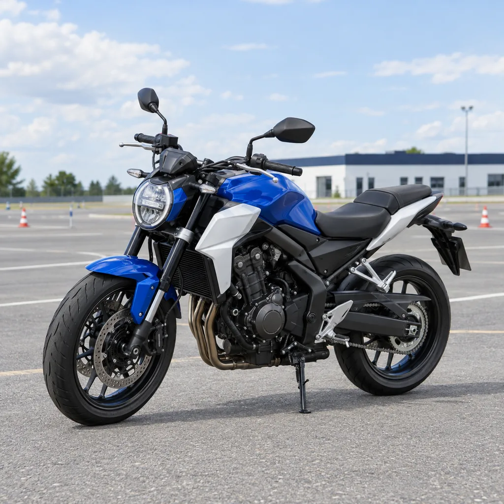
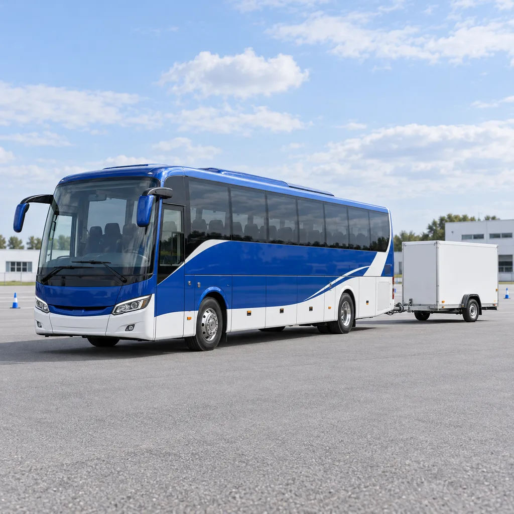

Shunchaki haydash emas. Mas’uliyat bilan yo‘lga chiqish.
7 TOIFA. YANGI IMKONIYATLAR.Vizual konsept

A
HAYDOVCHILIK TOIFASIMototsikl
01 / 07B
HAYDOVCHILIK TOIFASIYengil avtomobil
02 / 07C
HAYDOVCHILIK TOIFASIYuk avtomobili
03 / 07D
HAYDOVCHILIK TOIFASIAvtobus
04 / 07BE
HAYDOVCHILIK TOIFASITirkamali yengil avtomobil
05 / 07

DE
HAYDOVCHILIK TOIFASITirkamali avtobus
06 / 07CE
HAYDOVCHILIK TOIFASITirkamali yuk avtomobili
07 / 07
Puxta nazariyaHar bir qarorning asosi — bilim
Ongli amaliyotKo‘nikma takrorlash bilan shakllanadi
Kengroq imkoniyatlarXalqaro yo‘nalishga ochiq qarash
01 / AKADEMIYA
Yaxshi haydovchi. Yaxshi boshlanish.
Biz uchun haydovchilik — manzilga yetishdan ko‘proq.
Bu vaziyatni anglash, to‘g‘ri qaror qabul qilish va yo‘lda boshqalarga hurmat bilan munosabatda bo‘lishdir. Universal Driving Academy sizni aynan shu yondashuv bilan tanishtiradi.
Tushunib o‘rganishXavfsizlikni birinchi o‘ringa qo‘yishBosqichma-bosqich rivojlanish
02 / SIZNING YO‘NALISHINGIZ
Har kimning yo‘li o‘ziga xos.
Tajribangiz va maqsadingizga qarab, tayyorgarlik uchun to‘g‘ri nuqtani tanlang.
HAYDOVCHILIK TOIFALARI
7 toifa. Sizga mos yo‘nalish.
Kerakli toifani tanlang va tayyorgarlik rejangizni boshlang.
Sizga mos instruktor
Ayollar bilan ayol instruktorlar, erkaklar bilan erkak instruktorlar ishlaydi.
Uch tilda ta’lim
Darslar o‘zbek (lotin), rus va ingliz tillarida olib boriladi.
Erkin dars jadvali
Darslar erkin grafikda o‘tiladi. Qulay kun va vaqtlar instruktor bilan kelishiladi.
Turli ob-havoda amaliyot
Turli ob-havo sharoitida avtomobilni boshqarish bo‘yicha mashg‘ulotlar olib boriladi.
BIRINCHI QADAM
01
Noldan boshlayman.
Haydashni endi o‘rganayotganlar uchun nazariy bilim va boshlang‘ich ko‘nikmalar yo‘nalishi.
Yo‘l qoidalarini tushunish
Avtomobil bilan tanishish
Dastlabki amaliy ko‘nikmalar
KO‘PROQ ISHONCH
02
Erkinroq haydayman.
Asosiy bilimlari borlar uchun amaliy ko‘nikmalarni mustahkamlash, jumladan, turli ob-havo sharoitida avtomashinani boshqarish mashg‘ulotlari.
Turli ob-havo sharoitida haydash
Boshqaruvni mustahkamlash
Ongli qaror qabul qilish
KATTA MAQSADLAR
03
Yangi yo‘llarga tayyorlanaman.
Xorijda haydashni rejalashtirayotganlar uchun xalqaro yo‘nalish bo‘yicha tayyorgarlik.
Maqsad mamlakatni belgilash
Hujjatlar bo‘yicha savollar
Shaxsiy tayyorgarlik rejasi
Yo‘nalishlar tayyorgarlik maqsadini tanlashga yordam beradi. Erkin grafik: dars vaqti sizga qulay tarzda instruktor bilan kelishiladi. Dastur tarkibi va qabul shartlari alohida aniqlashtiriladi.
03 / O‘QISH JARAYONI
Katta yo‘lga — aniq qadamlar bilan.
Har bir bosqichning o‘z vazifasi bor. Siz esa doim keyingi qadamingizni bilasiz.
01
Maqsadni tanlang
Tajribangiz va nimani o‘rganmoqchi ekaningizni belgilang.
02
Rejani aniqlashtiring
Dasturni tanlang va dars vaqtini instruktor bilan o‘zingizga qulay tarzda kelishib oling.
Ilk qadam oldidan bilish foydali bo‘lgan ma’lumotlar.
Haydash tajribam bo‘lmasa ham boshlashim mumkinmi?
Boshlang‘ich tayyorgarlik aynan ilk qadamlarni qo‘yayotganlar uchun mos yo‘nalish. Qabul shartlari va sizga mos dastur yozilishdan oldin aniqlashtiriladi.
Nazariya va amaliyot qanday tashkil etiladi?
Nazariya yo‘l qoidalarini tushunishga, amaliyot esa boshqaruv ko‘nikmalarini rivojlantirishga xizmat qiladi. Turli ob-havo sharoitida ham avtomashinani boshqarish mashg‘ulotlari olib boriladi. Mashg‘ulotlar hajmi va tartibi tanlangan dastur bo‘yicha aniqlashtiriladi.
Dars jadvalini o‘zimga moslashtira olamanmi?
Ha. Erkin grafik: dars vaqti sizga qulay tarzda instruktor bilan kelishiladi.
O‘qish narxi qancha?
Amaldagi narxlar hozircha sahifada e’lon qilinmagan. Yozilishdan oldin tanlangan dastur narxi, unga nimalar kirishi va to‘lov shartlari aniqlashtiriladi.
Guvohnomam bilan xorijda hayday olamanmi?
Bu boradigan mamlakatingiz va guvohnomangizga bog‘liq. Xalqaro yo‘nalish bo‘yicha maslahatga tayyorlanayotganda shu ma’lumotlarni belgilang va tegishli talablarni aniqlashtiring.
Darslar qaysi tillarda olib boriladi?
Darslar o‘zbek (lotin), rus va ingliz tillarida olib boriladi. O‘zingizga qulay tilni tanlashingiz mumkin.
Instruktorlar qanday biriktiriladi?
Ayol o‘quvchilarga ayol instruktorlar, erkak o‘quvchilarga erkak instruktorlar biriktiriladi.
Qaysi toifalar bo‘yicha ta’lim beriladi?
A, B, C, D, BE, DE va CE toifalari bo‘yicha ta’lim beriladi. Sizga kerakli toifani yozilish paytida belgilang.
BIRINCHI QADAM SIZDAN
Yo‘l sizni kutmoqda.
Bir daqiqa ajrating. O‘zingizga mos boshlanishni toping.
Qabul bo‘yicha aloqa ma’lumotlari hozircha ko‘rsatilmagan.